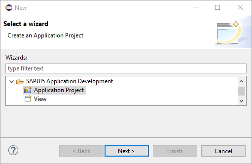
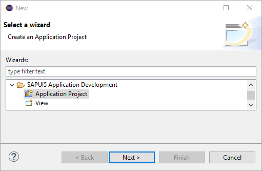

Create an SAPUI5 Application Project
To create an SAPUI5 Application Project, you must have installed the SAPUI5 Application Development feature in your Eclipse installation.
Procedure
-
Start the New SAPUI5 Application Project wizard in the Eclipse by choosing
 File
File  New Other... SAPUI5 Application Development Application Project Next
New Other... SAPUI5 Application Development Application Project Next .

.
 -
Enter the following view-related data:
- Choose the folder in which the view shall be created.
- Enter a unique name for your view.
- Choose the Development Paradigm (we recommend XML).

Results
After you finish the wizard, the system performs the following steps:
- A new dynamic Web project is created. All relevant files are created in the WebContent folder.
- A prefilled index.html is created, which contains the sap.ui.commons lib and the sap_belize theme in the bootstrap in case of a desktop target device, or the sap.m lib and sap_mvi theme in case of mobile target device. This depends on the choice you made in Step 2.
- In WEB-INF folder, a web.xml file is created, which contains settings for resource handling and the use of SimpleProxyServlet.
- The installed SAPUI5 UI lib plugins are automatically added to the Java build path and to the deployment assembly.
- TheSAPUI5 class path container (if available) is automatically added to the JavaScript include path.
- The index.html page is opened in the standard editor.
- Inside the JavaScript block of index.html, code completion is available, see JavaScript Code Completion.
- The J2EE perspective is automatically loaded.
- If you have selected the Create an Initial View option on the first page of the SAPUI5 Application Project wizard, a view and a view controller are created, and the coding to call the view is added to the index.html file.